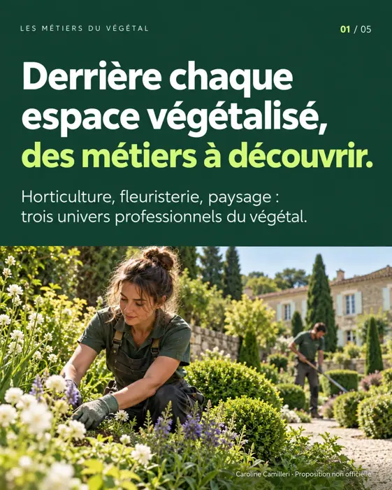
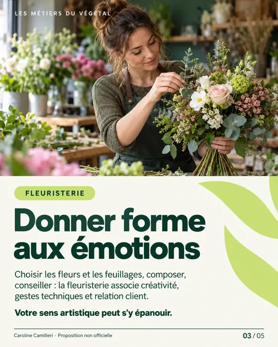
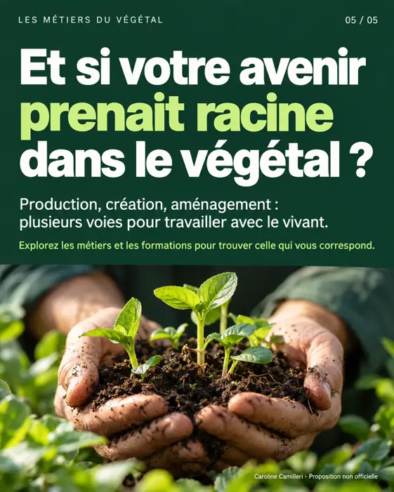

Projet de démonstration · Univers VALHOR
Les métiers du végétal
Un carrousel en cinq visuels, au format réseaux sociaux (4:5), pour faire découvrir l'horticulture, la fleuristerie et le paysage.

1. Couverture 
2. Horticulture 
3. Fleuristerie 
4. Paysage 
5. Appel à l'action